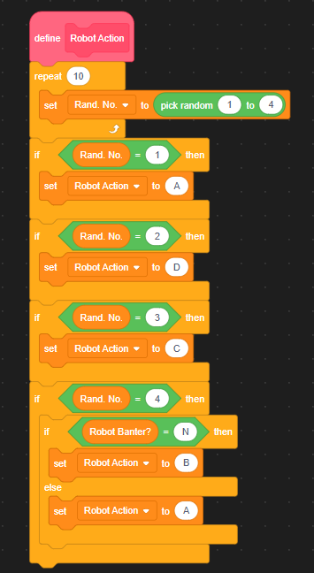
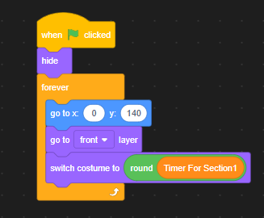
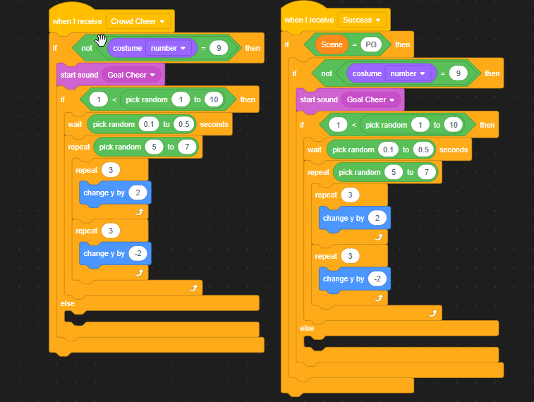

RPG
Project Type: University Game Jam
Software/Language Used: Scratch / Scratch Block Code
An RPG that features Rhythm based elements.
The controls are a mixture of keys and clickable objects. For the sequences, WASD or arrow keys are used to complete the sequences and during the openning cutscene, the any key can be used to progress. Meanwhile, during upgrading and perk selection, the second sections action selection and the title screen clickable objects are used to make selection easier to see.
The image below shows how key input is checked during sequences.
The image below shows how the different upgrades can be clicked on for upgrading.
Gameplay is split up into 2 sections, with 2 sub-sections to those. The first section has the player complete as many sequences of directional key inputs as they can while a 30s timer counts down. Each completed sequence grants the player points for the length of the sequence.
Sequences are formed randomly by selecting a length and having each key randomised. The images below show the randomisation.
Each key is handles by an individual object, so that each know when they are triggered and can track the progress the player makes.
After the time limit is up, the player can then upgrade the stats of their game, which upgrades the effectiveness of their actions in the second section. Each upgrade has 4 tiers higher than base. Once the player has finished spending their points on upgrades they can click the ready button at the bottom of the screen to proceed to the next section.
The image below shows how the different upgrades can be clicked on for upgrading.
The second section functions like an RPG, where the player and Robot take turns using 1 of 4 available actions to win the support of the crowd.
After 6 rounds, a winner is decided by the support bar at the top of the screen. The amount the bar has to be filled for the player depends on the difficulty of the robot which increases with each loop of the game. This difficulty increace also affect the strength of each action for the Robot.
The images below show the player actions and their effect.
The images below show the robot actions and their effect aswell as the robot AI.
If the player wins the second section they get the choice between 2 perks for the next gameplay loop. These perks include:
If the player looses to the robot, the game ends.
The visual design of the game focuses on simplicity. For the first section of the game the sequences that the player has to complete are shown at the bottom of the screen while the time is placed at the top and the points gain are on the side. This places each important element in clear view, seperated by the animation of the player character typing code onto their monitor. These animations are achieved through swapping constumes (for example, 1 costume is the player character upright and one is slightly squished, creating a bobbing effect).
The timer functions by switching to a costume based on a variable, creating a smooth and acurate timer.
Sequence keys have a green tick effect when entered correctly and red x effect when the opposite. This coupled with a sound que helps the player tell where they are at in the sequence.
For the second section, it was important to create the atmoshpere of the conflict with the robot. In order to do this, I created a layout in the style of a live debate. The crowd aspect of this is done through cloning and randomising costume and response timing, making the crowd feel believable. This is coupled with a spotlight effect on both the player and robots turn.
The functions below show how the crowd is created and reacts to the events in game.
The player options are displayed at the bottom of the screen in an rpg styled way and the support bar is placed at the top, representing which side is winning. When the player or robot take actions, particle effects appear around them to represent what they are gaining (defence, support or power for their next move).
The functions below show how particles spawn.
Both of these sections have tutorials that explain them on first expirience. They have boxes of text that point to each relevant area and explain their purpose.
Both of these sections follow a similar design idea of having clear distinction of each option. With the Upgrade section, I used the visuals to relate to the coding of the first section by using a green boarder.
If you want to message me, please do so here: coreygfives@gmail.com, I'll be sure to respond as quick as possible!